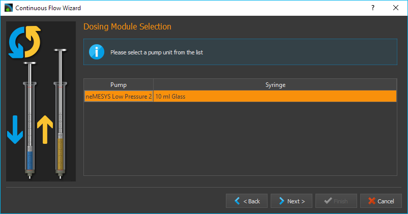
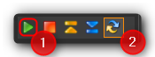

Continuous Flow
Introduction to Continuous Flow
In continuous flow mode you can pair two pumps together using the software, in order to create a continuous flow over a long period of time through alternating fluid take-up and discharge. In this case one of the pumps doses at a particular flow rate, while the other pump takes up reagent from the reservoir. Once the dosing pump has emptied the syringe, the software automatically switches to the second dosing unit with a full syringe and continues dosing with that pump. This creates a continuous, uninterrupted flow, which lets you dose at a constant flow rate for a nearly unlimited period of time.
Operating and Display Elements
You can recognize a dosing unit that was configured for continuous flow by the activated continuous flow icon in the direct control window (see image).

The continuous flow mode is terminated automatically, as soon as you change the syringe configuration of one of the connected dosing units. In this case you have to reconfigure all parameters. If continuous flow has been activated for one of the dosing units, the operating panel will indicate “continuous flow” in its status display (see image below).

The following display elements will then be visible:
Remaining time – shows the remaining time for continuous dosing. When this display reaches zero, continuous flow is stopped automatically.
Accumulated volume [ml] – the accumulated discharged volume shows the total volume discharged by both pumps into the application.
Linked pump – the linked pump is the second pump paired to this pump for the purpose of achieving continuous flow.
Configuring Continuous Flow
You will need at least two Nemesys dosing units to achieve continuous flow. Both units should have a valve. To configure continuous flow perform a right mouse click on the operating panel of the direct controller and select from the context menu (see image below).

A configuration dialog will appear. The dosing unit you click on for configuring continuous flow is the first of the dosing units to be paired. If continuous flow has not been configured for this dosing unit, you can also open the configuration dialog by pressing the Continuous Flow button in the direct control window (see image below).

If you see the following configuration page after calling up the dialog (see image below), the previously set configuration was loaded successfully and all you have to do is click the Finish button to accept the configuration.

If you want to change certain parameters of the loaded configuration, click on the Next button to browse the individual pages of the configuration assistant.
Selecting the second Dosing Unit
On this page of the configuration dialog you can select the second continuous flow unit from a list of available dosing units. If no configuration has been loaded, this will be the first page of the configuration assistant. Select the dosing unit of your choice by clicking the relevant name in the list. Then click on Next to continue the configuration.
Important
For continuous flow you should always select two dosing units that are immediately connected and displayed next to each other in the software.
Selecting a Continuous Flow Mode

You can choose from the following continuous flow modes:
Pressure Controlled Switching - yields the best results without changing pressure or flow rate when switching units. However, you will need a pressure sensor on each pump.
Cross-Flow- provides a soft transition and a constant flow rate when switching from one dosing unit to the other. This mode is most suitable if your application uses a low system pressure and you don’t have pressure sensors.
The individual modes will be explained in detail in the following subsections. Perform a left mouse click on the mode you wish to configure and then click on Next to continue.
Configuring 3x2-way Valves
During continuous flow operation the respective valves get switched for both pumps. In the Configure 3x2-way Valves window (see image below) you can configure the valves and valve positions for your 3x2-way valves.
Tip
If you have already assigned valves to your pumps, these valves are automatically selected here.

First, select the valve type you wish to use ❶. If you use 3x2-way valves and have selected Pressure-Controlled Switching, you will need additional shut-off valves. If you use 3x3-way valves with an additional closed position, you will not require additional shut-off valves for pressure-controlled switching.
Use the selection box ❷ to select the valve you want to switch. Using the two selection boxes below ❸, select the positions you want the valve to switch to when filling and dosing. If you have a 3x3-way valve with an additional closed position, you also need to configure the closed position.

Configuring Shut-off Valves
If you have selected pressure-controlled switching and your 3x2-way valves do not have a closed position, you will need to configure your shut-off valves in this next step. As in the valve dialog above, please select the valves and configure the closed ❶ and open ❷ valve position.

Configuring Pressure Sensors
If you have selected pressure-controlled switching, you need to configure the pressure sensors for both pumps in this next step (see image below).

Tip
If you have already assigned pressure sensors image10 to your pumps that are displayed on the front panel, these sensors are automatically selected here, and you can proceed immediately by clicking Next >.
Pressure-controlled Switching
Introduction to pressure-controlled switching
In pressure-controlled switching the pressure of the filling pump is adapted to the pressure of the dosing pump prior to switching, through the use of valves and pressure sensors. In addition, during the switching process the flow of both pumps is cross-faded (cross-flow). This prevents the occurrence of a switching impulse, while pressure and flow rate stay nearly constant.
Since a certain period of time is needed to fill and cross-fade the pump, in order to build and reduce pressure and to switch the valves, the achievable flow rate in continuous mode is lower than the maximum flow rate of each of the individual pumps involved.
In the configuration window for pressure-controlled switching you can set all parameters and you can adjust the pressure controller of each pump for the current configuration and the desired application pressure.

In the upper part of the window ❶ you find the tuning parameters. In the lower part of the window ❷ you will find a diagram, which shows the controller’s target value (white) and the measured pressure value (in color) during adjustment. Using this graphic representation you can get an idea of the pressure controller’s operational status and detect issues like excessive oscillation.
Caution
Very high pressure may occur during tuning. If necessary, you should activate pressure monitoring, in order to stop the pump when certain pressure values are exceeded.
Tuning Parameter Overview
The continuous mode uses a dedicated pressure controller for each pump to regulate the target pressure in the filling pump before switching to the application. The proportional gain of the controller depends on many factors, such as pressure, tightness, tube length and the fluid being used. This value must be re-calibrated or retuned for each setup. The tuning section uses the following operating elements:

Pressure Display – depending on the dosing direction (filling/discharge) the pressure display is colored in orange or blue.
Tuning Pressure – this is where you set the pressure to which the pressure controller will be tuned. Set the anticipated application pressure you will use for dosing into your application.
Proportional Gain – this field shows you the proportional gain of the pressure controller. If you click the button with the lamp symbol, the system will suggest a proportional gain for the target pressure you set. This value can be used as a starting point for tuning.
Pressure Window – Defines a symmetrical range of accepted pressure values relative to the target pressure. This means that only if the pressure is within this window for the duration of the Pressure Window Time it will be considered stable. A value that is too high may cause the controller to overshoot, a value that is too low may cause long times for the target pressure to settle, or may cause the target pressure never to be reached. The value that should be set depends on the target pressure and the quality of the pressure sensors used. The pressure window must always be greater than the fluctuations of the pressure sensor, otherwise the pressure will never be considered stable.
Pressure Window Time– The time the pressure must be within the Pressure Window for it to be considered stable by the software.
Reservoir Pressure – Set the pressure that exists in the reservoir from which the syringe is filled. The pressure is lowered to this pressure before the valve to the reservoir is opened to fill the syringe.
Status Display – the status display gives you information regarding the current status of the pressure controller or the calibration. You should only go to the next step if you see a green checkmark here or if a previous tuning has been loaded.
Restore Default Settings – pushing this button restores the standard tuning parameters.
Tuning the Pressure Controller
A pump’s pressure controller should be tuned at the approximate piston position at which the switching to the other pump takes place. If you use two identical pumps, this usually happens when the syringe is almost completely filled. To make sure that the syringe can still be filled further for pressure building, the piston should not be in the rearmost position. As a rule of thumb the syringe should be filled to about 90%.
Please follow the steps below to tune the pressure controller.
First, enter the desired tuning pressure ❷. This should be approximately equal to the application pressure at the desired flow rate. You can determine the tuning pressure ahead of time by dosing into your application at the desired flow rate.
Now select the starting value for the proportional gain ❹ of the controller. If you click on the button with the lamp symbol, the system will suggest a starting value for the selected pressure.
Start the tuning process by clicking the Start Tuning button. The software will now start tuning the controller automatically. For safety reasons tuning will begin at 50% tuning pressure, to avoid damage due to pressure overshooting. The system tunes the controller in such way as to arrive at the target pressure quickly with a minimum of overshoot.

If achieving the target pressure takes a long time (10 seconds or more – see image below), you can interrupt the tuning process and increase the proportional gain manually (by doubling it, for example).

If the controller overshoots a lot, you can interrupt the tuning process and decrease the proportional gain manually (by halving it, for example). Restart the tuning process with the new values.
Tip
After a successful tuning, change the value for the target window (Pressure Window) and start another tuning run. You will get a feeling for how Pressure Window value affects controller tuning.
During tuning the controller’s proportional gain is adjusted automatically. If you just want to manually test the current control parameters without the automatic adjustment, simply start a parameter test by clicking on Test Parameters.

During the parameter test the pump cycles between a non-pressurized state of 0 bar and the set tuning pressure. This lets you visually check and evaluate the current control parameters using the diagram.
Perform a right mouse-click on the diagram to open the context menu with additional diagram functions.

Setting Parameters
After tuning both pumps, go to the next page to set further parameters for pressure controlled switching.

In the Refill Flow field ❶, set the flow rate used to fill the syringe. The larger you select this value, the higher the maximum flow rate that can be realized for continuous dosing. This means that you should always select the filling flow rate as high as possible or as high as your application allows. If the filling flow rate is too high, air bubbles may form.
The Timing slider ❷ lets you control the timing of continuous flow operation. During tuning, the volume and time periods needed for pressurizing the filling pump are determined. These time values are multiplied by a certain factor to create a safety margin. This buffer is used to compensate for delays during pressure building, which can be caused by issues or variations in the system. You can use the slider to select a higher margin (Robust Timing) or a lower margin (Tight Timing).

Using a larger buffer decreases the flow rates that can be achieved in comparison to a smaller buffer. In the same way, a smaller buffer increases the risk of disrupting the continuous flow timing in case of system issues or variations, possibly leading to flow instabilities. Double-clicking on the slider sets the standard value we recommend, unless you absolutely need a higher or lower flow rate.
Important
A small safety buffer for the timing increases the risk that the timing of the continuous flow is disturbed and the continuous flow is interrupted if the application pressure fluctuates or if other disturbances occur.
In the field Maximum feasible flow (ml/s) ❸ you can see the maximum flow rate that can be achieved with the set parameters. The coloured bar shows how far away this flow rate is from the maximum flow rate that you can achieve in normal pump operation mode. This allows you to quickly see how the refill flow rate and timing affect the realizable flow rate.
Once you have set all parameters, continue the configuration with section Set flow rate and duration of continuous flow.
Configuring Cross-Flow

In the Refill Flow field ❶, set the flow rate used to fill the syringe. By pressing the Min and Max buttons. The larger you select this value, the higher the maximum flow rate that can be realized for continuous dosing. This means that you should always select the filling flow rate as high as possible or as high as your application allows. If the filling flow rate is too high, air bubbles may form. This flow rate is always slightly higher than the rate indicated in the Maximum feasible flow (ml/s) field ❹, since the syringes must be filled more quickly in order to be ready for the next dosing run when the syringes are switched.
Cross-flow makes it possible to cross-fade the flows of the dosing modules. This is done by configuring the Cross-flow Duration ❷.
In the field Maximum feasible flow (ml/s) ❹ you can see the maximum flow rate that can be achieved with the set parameters. The coloured bar shows how far away this flow rate is from the maximum flow rate that you can achieve in normal pump operation mode. This allows you to quickly see how the refill flow rate and timing affect the realizable flow rate.
The following image shows the cross-fading of flows from two individual pumps.

The Cross-Flow-Duration tcross expresses the period of time needed for cross-fading one dosing module to the other. The smaller this value, the steeper the flow rate curve and the less time is required for the cross-flow operation to be completed.

Cross-flow offers you a simple way of compensating for pressure drops during switching. The Overlap Time tov ❸ governs the period of time by which the flow curves of both dosing modules overlap. The larger the tov value, the longer both dosing modules keep dosing simultaneously (see image above).
Set flow rate and duration of continuous flow
In this window (figure below) you set the flow rate at which the continuous flow is started ❶ and the duration of dosing ❷. If you don’t want to limit the duration, simply leave the setting at Dose unlimited. With this setting continuous flow is maintained until you stop the dosing process manually.

The software offers you three ways of limiting the duration of continuous flow:
Dose volume – continuous flow is stopped as soon as a defined dosing volume has been reached.
Dose for – continuous flow ends after a predetermined duration of time.
Dose until – continuous flow ends at a specific time in the future.
Starting/Stopping Continuous Flow
After the configuration you can start continuous flow operation by a left mouse-click on the Start Dosing button in the direct controller window.

You can interrupt continuous flow operation at any time by clicking the Stop Dosing button.

If you stop a dosing unit involved in continuous flow operation, you also stop the other dosing unit tied into the system. If you have configured a particular duration for continuous flow operation, stopping a dosing unit will also interrupt the preset duration, meaning that when you restart the dosing unit, continuous flow operation will resume for the time remaining at the point of interruption. If you configured a target volume for continuous flow operation, the system will resume dosing the remaining volume at the time of interruption, upon restart.
Cancel/Restart Continuous Flow
Once the preset time for continuous flow operation has elapsed or the target volume has been reached, continuous flow operation is terminated and both dosing units are stopped. Performing a left click on the Start ❶ button lets you restart continuous flow operation. In this case the duration or target volume will be reset to their starting values. Left clicking on the Continuous Flow ❷ button terminates continuous flow mode and stops the continuous flow operation in progress. In this case re-starting will not be possible (see image below).
Change flow rate in continuous flow
You can change the flow rate during a dosing run in all operating modes. To achieve this enter the desired flow rate into the Flow field ❶ and confirm by clicking on Start ❷ with the left mouse button (see image below).

The dosing module accepts the change in flow rate, while retaining all other dosing parameters, such as volume or continuous flow parameters. When you configure continuous flow operation you will be shown the maximum dosing flow rate achievable with the currently set refill rate and the other continuous flow parameters, for guidance (see image below).